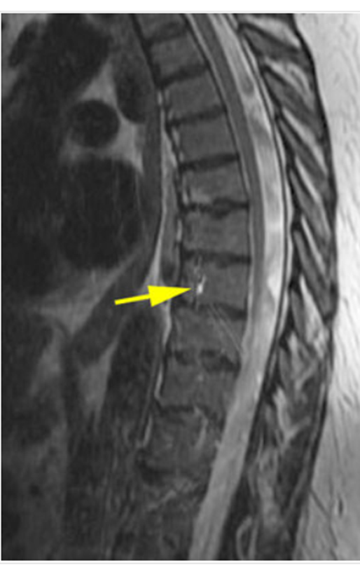

Short Description
RF interference occurs when external radiofrequency signals disrupt the MRI scanner’s signal acquisition.
How It Appears in Image
Images may show stripe patterns, noise bands, or repeating signal disturbances.
Primary Cause
Electronic devices, improper shielding, or RF leakage in the scanner environment.
Clinical Impact
Degrades image quality and may obscure perfusion signals.
Severity Level
Moderate
Common Fix
Ensure proper RF shielding in the MRI room and remove external electronic interference sources.
MRI
